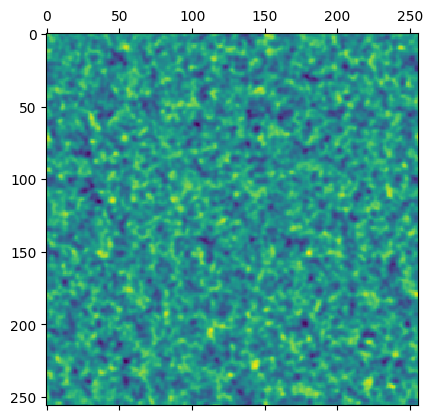

%pylab inline%pylab is deprecated, use %matplotlib inline and import the required libraries.
Populating the interactive namespace from numpy and matplotlibCalling from Python
You can call Julia and CMBLensing.jl directly from Python. This is made possible by the juliacall package. You can install it into your Python environment with, e.g.:
$ pip install --user juliacallBasics of calling Julia
Once juliacall is installed, first point it to the Julia environment environment you want active (the one with your desired CMBLensing version in it):
import os
os.environ["PYTHON_JULIAPKG_PROJECT"] = "/home/cosmo/CMBLensing/docs"
os.environ["PYTHON_JULIAPKG_OFFLINE"] = "yes"Then import juliacall:
from juliacall import Main as jl[juliapkg] Locating Julia ^1.6.1
[juliapkg] Using Julia 1.9.3 at /usr/local/bin/julia
[juliapkg] Using Julia project at /home/cosmo/CMBLensing/docsThe jl object represents the Julia Main model, for example:
jl.cos(1) # <--- this is Julia's cosine function0.5403023058681398You can also run arbitrary Julia code (this is helpful if you want to use Julia language features or syntax which don't exist in Python). For example, 1:10 is not valid Python syntax, but you can do:
jl.seval("1:10")range(1, 11)Calling CMBLensing.jl
You can use seval to essentially just paste Julia code into Python session, for example, following the Lensing a flat-sky map example:
jl.seval("""
using CMBLensing
""")Next, we simulate some data:
jl.seval("""
(;f, ϕ) = load_sim(
θpix = 2,
Nside = 256,
T = Float32,
pol = :P
);
""");...and we could continue the example as desired.
Variables defined by seval can be accessed directly in the Main module, and are automatically converted to Python-usage objects, e.g:
matshow(jl.seval("f[:Ex]"))<matplotlib.image.AxesImage at 0x7fc3b03731f0>
You can also pass Python objects into Julia function, and they are converted as well:
jl.FlatMap(np.random.randn(10,10))100-element 10×10-pixel 1.0′-resolution LambertMap{PyArray{Float64, 2, true, false, Float64}}:
-1.5573023347790027
1.0959178403337626
0.9519254819830556
-0.038381463119681714
-1.1669838327345632
-0.6330561330058494
0.443407675488603
0.07599267953053207
-0.8986860009336953
0.2181276822253109
⋮
-0.12310637681170047
0.06658744059133963
-0.8741147226673158
0.27311279683698786
-0.18195798300399588
0.8867024667679957
0.7318639728278861
0.4945647711445212
-0.47461166370745245See the documentation for PythonCall / juliacall for more details.
Plotting
If you want to use special plotting of maps defined in Julia, be sure to use the Julia plot function not the Python one:
jl.seval("""
using PythonPlot
""")┌ Warning: No working GUI backend found for matplotlib
└ @ PythonPlot ~/.julia/packages/PythonPlot/KcWMF/src/init.jl:128jl.plot(jl.f)